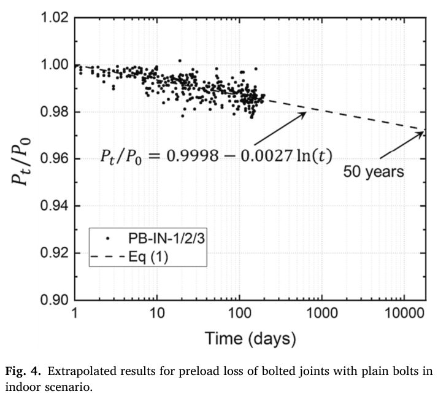

Jcsr 2023 — estudo de caso— case study
Figura do artigoPaper figure

Figura(s) originais do artigo (recorte do PDF) — a fonte dos pontos que foram digitalizados.Original figure(s) from the paper (PDF crop) — the source of the digitized points.
Condições do ensaioTest conditions
| ReferênciaReference | Yang, Bai & Ding (2023). JCSR 211:108211 · doi:10.1016/j.jcsr.2023.108211 |
| ParafusoBolt | M20x2.5 |
| Pré-carga F0Preload F0 | 145 kN |
| AmplitudeAmplitude | — |
| FrequênciaFrequency | 1.16e-05 Hz |
| Família / nº de curvasFamily / curves | creep · 5 |
| MAE medianomedian | 0.012 |
Informações do artigo — aparato, corpo-de-prova, matriz de ensaiosPaper information — apparatus, specimen, test matrix
jcsr2023 — Loss of preload of unprotected bolted joints considering environmental effects
Citation + DOI
Yang, K., Bai, Y., Ding, C. (2023). "Loss of preload of unprotected bolted joints considering environmental effects: A comparative study." *Journal of Constructional Steel Research*, 211, 108211. https://doi.org/10.1016/j.jcsr.2023.108211
Open access, CC BY 4.0. Department of Civil Engineering, Monash University, Clayton VIC, Australia. Funded by Australian Research Council (ARC) Linkage project LP180101080. Received 8 Jun 2023; accepted 6 Sep 2023.
Gap tag(s) + why
- G3 (static relaxation per tribological pair, beyond 304SS): four distinct
bolt/plate tribological pairs are covered in ONE consistent rig — plain carbon-steel M20 8.8, hot-dip galvanised M20 8.8, stainless-steel A4-70, and GFRP M20, all clamping the SAME mild-steel core/cover plates. This is a clean same-rig sweep of bolt material with everything else held fixed — directly useful for per-pair C_creep/embedding provenance (§4.7 MODEL_LEGITIMACY.md discipline: never pool constants across rigs/pairs).
- G6 (environmental / temperature): three environments (indoor / outdoor /
seawater immersion) with continuously logged temperature and RH, run on the SAME plain-bolt joint — isolates environment as the sole swept variable for one pair.
- G8 (GFRP composite fasteners): a genuine GFRP bolt (M20, woven-fabric
epoxy laminate) is torque-tightened and monitored to full preload collapse — a data point for a fastener material class entirely outside the current V2 model's scope (composite creep/moisture-swelling, not metal embedding/creep).
Rig / apparatus
- Relaxation setup: single-bolted double-lap joint. A **steel bush fitted
with strain gauges sits under the washer** and acts as a calibrated load cell (compression-tested beforehand to relate strain → axial load). Two gauges per bush, bonded on the exterior surface, oriented along the bush's longitudinal axis. This is the same "steel-bush-as-load-cell" instrumentation family as Afzali et al. 2017 (ref. [14] in the paper) and other âncora interna-style strain-gauged rigs already in the library.
- How clamp force is measured: continuous strain logging via a data-logger
system — 1 reading/second for the first 24 h, 1/minute for the first week, then 1/10 minutes for the remainder of the test. This is a MUCH finer raw sampling than the 15–40 pts digitized here (see caveats).
- Environments (Fig. 2a–c):
- Indoor — bench-top, quasi-constant T = 16.2–18.2 °C, RH 35–57%.
- Outdoor — uncovered rack at Clayton, Victoria, Australia; T = 1.8–19.7 °C,
RH 46–90% (natural weather, rain/dust exposure).
- Seawater immersion — fully submerged in a tank of 3.5 wt% NaCl solution
(average ocean salinity), pH held at 6.2–8.4, solution replaced monthly to avoid alkaline build-up.
- Wireless T/RH sensors logged indoor and outdoor conditions continuously.
- CONTROL — static hold: this is a pure time/environment relaxation test.
Specimens are torque-tightened once to the target preload, then placed on a supporting rack (bolt shank horizontal) inside the environment and left completely idle — no cyclic load, no vibration, no re-tightening, only ambient thermal/humidity/corrosion exposure acting on a static clamped joint. This puts the paper squarely in the same experimental family as the static creep anchor already used in New_Theory/anchor_creep.py (li2022marstruc), just with environmental/corrosion severity as the new swept axis instead of temperature alone.
- Waterproofing of the instrumentation (so gauges survive rain/NaCl): 3
layers wrapped around the steel bush — (1) pressure-sensitive butyl-rubber (SB) tape, (2) 1 mm weather-resistant vinyl-mastic (VM) tape, (3) self-amalgamating tape pre-stretched 1.5× and overlap-wound. Despite this, 2 of 18 specimens still suffered gauge failure from NaCl ingress before the nominal end time (see caveats).
Specimen / materials
- Joint type: single-bolted double-lap splice. Core plate 220×100×6 mm;
two cover (splice) plates 220×100×3 mm each. Edge and end distances 50 mm (= 2.5·d, d = bolt diameter). Hole clearance 2 mm (per AS 4100).
- Bolt sizes/classes — all M20, four types, torque-controlled installation:
| Bolt type | Class/grade | E (GPa) | ν | f_y (MPa) | f_u (MPa) | Install torque |
|---|---|---|---|---|---|---|
| Plain (PB) | Class 8.8 | 206 | 0.3 | 640 | 878 | 407 N·m |
| Hot-dip galvanised (GB) | Class 8.8 | 206 | 0.3 | 717 | 931 | 290 N·m |
| Stainless steel (SSB) | A4–70 | 200 | 0.3 | 790 | 989 | 395 N·m |
| GFRP (GFB) | woven-fabric (WF) epoxy laminate, 0°/90° plain weave | 20.3 | 0.41 | — | tensile 232.7 MPa, shear 78 MPa, G=6.3 GPa | 94 N·m |
(Galvanised-coating thickness not numerically reported in this paper, unlike the Yang & DeWolf 2000 reference it cites, 127–508 µm — open gap if a coating-thickness sweep is later wanted from THIS rig.)
- Member (plate) material — mild/carbon steel for ALL scenarios (identical
plates regardless of bolt type): core plate E=205 GPa, ν=0.3, f_y=375 MPa, f_u=528 MPa; cover plate E=190 GPa, ν=0.3, f_y=257 MPa, f_u=350 MPa.
- Surface finish/coating: plates are bare/uncoated mill-finish steel — the
"unprotected" of the title refers to the PLATES having no anti-corrosion coating; the bolt itself carries the only surface treatment variable (none / hot-dip galvanised zinc / inherently passive stainless / polymer composite).
- Washer present (standard) with the steel-bush load cell stacked beneath it.
Test matrix
- Target preload P0: 145 kN for all 3 steel bolt types (= 0.7·f_ub·A_s per
EN 1090-2); 14 kN for GFRP (= 70% of GFRP thread-stripping capacity, 20 kN, per the companion paper Yang et al. 2021 J. Build. Eng.). Achieved preload from the fixed installation torques was within 11% of target.
- Conditions × bolt type (3 repeats each):
- Plain bolt (PB): indoor, outdoor, seawater immersion — 9 specimens.
- Galvanised (GB), stainless (SSB), GFRP (GFB): seawater immersion only
(chosen as the most severe scenario to expose bolt-type differences) — 9 specimens.
- Total 18 specimens (matches the 18 rows of Table 2).
- Time span (measured, not extrapolated):
- PB indoor & outdoor: 150 days.
- PB / GB / SSB seawater immersion: 80 days nominal (GB-IM-2 gauge failed at
58 d; SSB-IM-3 gauge failed at 20 d — NaCl ingress, footnote (a) Table 2).
- GFB seawater immersion: 68–76 days (preload collapses to ≈0, test ends).
- Temperature/humidity: indoor 16.2–18.2 °C / RH 35–57%; outdoor 1.8–19.7 °C
/ RH 46–90%; seawater immersion — bulk solution temperature not separately reported (assume ambient lab, pH 6.2–8.4 maintained).
- #curves in the paper: Figs. 3a (3), 5a (3), 6a (3), 7a (7, incl. 1 repeat
of a Fig. 6a curve), 8a (3) = 18 raw experimental traces (one per specimen), plus Figs. 4 and 9a–d showing the same data overlaid with fitted/extrapolated model curves. 6 CSVs digitized here (one representative specimen per material×environment condition — see Curve inventory).
- Swept variables: bolt material (4 levels) × environment severity (3
levels, only fully crossed for the plain bolt) × time.
Experimental nuances
- Universal 3-stage shape (all non-indoor conditions, defined via a
circle-marker/square-marker convention in Figs. 5–8): Stage I — slow, ≤7% loss, attributed to embedding of contacted-surface asperities + bolt stress relaxation (same mechanisms as the benign indoor case). Stage II — rapid collapse as corrosion (general atmospheric, galvanic, or electrochemical) reduces clamping-area thickness. Stage III — preload re-stabilizes at a much lower plateau as corrosion products fill the gaps and self-limit further oxygen/chloride ingress. Indoor specimens NEVER leave a Stage-I-like slow regime within 150 days.
- Stage transitions occur earlier with harsher environment (same plain
bolt): indoor — none within 150 d; outdoor ≈100 d; seawater ≈15 d. Within seawater immersion, bolt type further modulates onset: galvanised fastest (≈7–8 d, zinc coating creeps/corrodes preferentially), plain intermediate (≈13–15 d), stainless slowest (≈20–26 d, passive film delays ingress).
- Galvanic-couple reversal: for galvanised bolts, the **zinc coating is
the sacrificial anode (corrodes preferentially, protecting the steel plate) yet still yields the largest preload loss because the coating itself is consumed/creeps. For stainless bolts, the carbon-steel PLATE is now the anode** (bolt is cathodic/passive) so the plate corrodes faster than in the plain-bolt case — net result: galvanised (74.8%) ≈ stainless (75.2%) final loss, BOTH higher than plain-on-plain (60.1%), via two different galvanic mechanisms acting on different members.
- Non-monotonic "recovery" bumps are real, not digitization noise: e.g.
plain-outdoor loss DECREASES from 34.3% (113 d, stage-II end) to 29.6–31.5% (150 d, stage-III end); plain-seawater specimen 3 similarly recovers from 63.9% (30 d) to 55.4% (80 d). Confirmed both in Table 2's own tabulated numbers and visually as a damped rebound in the curve shape — kept in the representative CSVs where relevant (plain_outdoor).
- GFRP is qualitatively different: preload *increases* (negative "loss")
for the first ~18–20 days — attributed to the GFRP bolt absorbing water and swelling volumetrically inside the NaCl bath, adding extra clamp compression — before chloride attack on the plate (dominant) and on the polymer matrix/fibres (secondary) drives a collapse to ≈0 by 68–76 days. Because GFRP's initial preload (14 kN) is already low, the companion paper [26] argues the joint may still behave like a snug-tight connection post-collapse (only ~10% capacity difference vs full-tension for GFRP joints).
- Sensor casualties: GB-IM-2 (gauge failed 58 d) and SSB-IM-3 (gauge
failed 20 d) — NaCl infiltration past the 3-layer waterproofing. Neither was used as the digitized representative (both representatives chosen have complete unbroken 80-day records).
- Measured vs extrapolated: all quantities above and all 6 CSVs are
measured data (raw strain-gauge readings), digitized only over the paper's own stated exposure window. The paper ALSO fits Eq. (1) (Pt/P0 = a + b·ln(t), indoor) and Eq. (2) (piecewise two-segment log model with a break at t = c, for outdoor/seawater) and extrapolates these to 50 years (indoor, Fig. 4), 10 years (plain outdoor/seawater, Fig. 9a–b), and until near-zero (~1 year galvanised, ~8 months stainless, Fig. 9c–d). None of the extrapolated portions were digitized — see Digitization caveats. GFRP was NOT modelled at all (no Eq. (2) coefficients given — its swell-then-collapse shape doesn't fit the monotonic log form).
Main conclusions (paper's own, condensed)
1. Preload loss scales strongly with environmental severity for the same (plain) bolt: 2.0% indoor (150 d) → 31.5% outdoor (150 d) → 60.1% seawater immersion (80 d); rapid-loss onset similarly compresses from "never" → ~100 d → ~15 d. 2. Under seawater immersion, galvanised (74.8%) and stainless (75.2%) bolts both lose MORE preload than plain bolts (60.1%) by 80 days, via galvanic corrosion — despite stainless steel resisting corrosion best in isolation, its plate-side galvanic attack still produces a large joint-level loss. 3. Joint slip resistance (∝ preload) can therefore degrade within weeks for unprotected, fully-pretensioned joints exposed to seawater — as early as 8 days (galvanised). 4. The 3-stage loss pattern (slow → rapid → plateau) is universal across bolt types in harsh environments, differing only in timing/magnitude. 5. GFRP bolted joints show a unique preload INCREASE for ~20 days (moisture swelling) before collapsing to near-total loss by ~70 days (low initial preload + plate corrosion + polymer/fibre chloride attack). 6. A modified 5-parameter log model (Eq. 2) fits the outdoor/seawater steel-bolt data well (R² = 0.88–0.95) and reproduces the stage-II onset time within 5% of experiment.
Curve inventory
All CSVs: header x,F_over_F0; x = TIME IN DAYS (paper's native unit — NOT converted to seconds, see caveats); F0 as stated. All MEASURED (no extrapolation beyond the paper's own stated exposure window).
| CSV file | Source fig. | Specimen (representative) | F0 | Time span | #pts | Notes |
|---|---|---|---|---|---|---|
jcsr2023_plain_indoor.csv | Fig. 3a | PB-IN-1 | 145 kN | 0–150 d | 20 | Final ratio 0.988 = exact Table-2 value (1.2% loss) |
jcsr2023_plain_outdoor.csv | Fig. 5a | PB-OU-2 | 145 kN | 0–150 d | 31 | Matches text headline "31.5%"; stage I/II/III anchors (t=100/113/150 d) exact from Table 2; captures post-stage-II rebound |
jcsr2023_plain_seawater.csv | Fig. 6a (≡ Fig. 7a) | PB-IM-1 | 145 kN | 0–80 d | 22 | Matches text headline "60.1%"; anchors t=15/28/80 d exact |
jcsr2023_galv_seawater.csv | Fig. 7a | GB-IM-1 | 145 kN | 0–80 d | 22 | Matches text headline "74.8%"; complete 80-d record (GB-IM-2 gauge failed early); anchors t=7/30/80 d exact |
jcsr2023_stainless_seawater.csv | Fig. 7a | SSB-IM-1 | 145 kN | 0–80 d | 20 | Matches text headline "25-day stage I / 2.7%"; complete 80-d record (SSB-IM-3 gauge failed at 20 d); anchors t=25/45/80 d exact |
jcsr2023_gfrp_seawater.csv | Fig. 8a | GFB-IM-1 | 14 kN | 0–68 d | 23 | Rise-then-collapse; anchors t=18 d (peak 1.23, exact) and t=68 d (ratio 0, "100% loss" exact); NOT modelled by the paper's Eq. (2) |
Not digitized (explicitly excluded, model/extrapolation only): Fig. 4 (indoor Eq. 1 dashed line beyond 150 d → 50 years); Fig. 9a–d (Eq. 2 fitted curves + dashed extrapolation to 10 yr / ~1 yr / ~8 months beyond the 80–150-day measured windows for PB-OU/PB-IM/GB-IM/SSB-IM). The scatter markers inside Fig. 9a–d are the SAME underlying experimental data as Figs. 5a/6a/7a and were not double-digitized.
Not digitized as separate CSVs (redundant replicates — exact numeric values preserved in Table 2, reproduced below for convenience):
| Specimen | Env. | Stage I (day, loss%) | Stage II (day, loss%) | Stage III (day, loss%) |
|---|---|---|---|---|
| PB-IN-1/2/3 | IN | 150 d: 1.2 / 1.9 / 2.0 | – | – |
| PB-OU-1/2/3 | OU | 100 d: 5.0 / 7.0 / 3.5 | 113 d: 34.3 / 35.5 / 35.3 | 150 d: 29.6 / 31.5 / 29.1 |
| PB-IM-1/2/3 | IM | 15/13/15 d: 3.1/3.6/3.3 | 28/29/30 d: 43.9/55.2/63.9 | 80 d: 60.1/66.4/55.4 |
| GB-IM-1/2/3 | IM | 7/8/8 d: 5.9/3.2/4.5 | 30/20/30 d: 69.3/65.1/63.2 | 80/58ᵃ/80 d: 74.8/77.2/74.4 |
| SSB-IM-1/2/3 | IM | 25/26/20ᵃ d: 2.7/2.3/2.0 | 45/41/– d: 68.8/73.7/– | 80/80/– d: 72.2/75.2/– |
| GFB-IM-1/2/3 | IM | 18/9/20 d: −23.0/−14.9/−25.7 (increase) | 68/75/76 d: 100/100/100 | – |
ᵃ Strain gauge damaged by NaCl infiltration; series ends early.
3-stage model coefficients (Eq. 2 in the paper, Pt/P0 = a+b·ln(t) for 0<t≤c, = k1·a + k2·b·ln(t−c) for t>c; days), for reference/cross-check only (NOT used to generate the CSVs, which are pixel/anchor-digitized from the raw curves):
| Specimen set | k1 | k2 | a | b | c (days) | R² |
|---|---|---|---|---|---|---|
| PB-OU | 0.84 | 6.00 | 0.96 | −2.53E-3 | 99.03 | 0.88 |
| PB-IM | 0.69 | 32.88 | 0.99 | −2.24E-3 | 14.65 | 0.93 |
| GB-IM | 0.80 | 61.68 | 0.98 | −2.14E-3 | 7.95 | 0.94 |
| SSB-IM | 0.96 | 210.84 | 0.99 | −8.30E-4 | 24.70 | 0.95 |
Indoor (PB-IN) simple Eq. (1): Pt/P0 = 0.9998 − 0.0027·ln(t) (Fig. 4). GFRP: no model given.
V2 mapping
- Pure static/environmental relaxation — no cyclic loading at all. In BAS
V2 terms this excites only the Embedding and Creep channels (EmbeddingLoss state-based Stage-I settling + C_creep); WearLoss and RotationalLoosening are NOT excited (zero slip amplitude, force- or displacement-controlled cycling is entirely absent). Same experimental family as the New_Theory/anchor_creep.py / li2022marstruc static-creep anchor, just with environment/corrosion severity swept instead of temperature.
- Only the indoor condition (PB-IN, ≤2% over 150 days, no corrosion) is a
legitimate C_creep/embedding calibration candidate for a THIRD tribological pair (M20 8.8 / mild steel plate, 145 kN, indoor lab) — distinct from both the âncora interna rig and the 304SS anchor. Per MODEL_LEGITIMACY.md §4.7 per-pair discipline, its fitted C_creep (if ever anchored) must NOT be pooled with the âncora interna or 304SS values.
- **Outdoor and seawater-immersion Stage II/III (the corrosion-driven collapse
and self-limiting plateau) are outside the current model's scope entirely — DynamicStiffnessAnalyzer has no environmental/corrosion state variable. This is a genuine form gap**: a monotonic-growing-then-self-limiting loss channel driven by TIME + humidity/chloride exposure (not by cyclic slip dissipation like surface_damage D, which is architecturally the closest analogue — grows then saturates — but wired to the wrong driver for this paper's physics). Flagging as a candidate future "environmental/corrosion degradation" mechanism, parallel in spirit to roadmap item 9 (missing amplitude-driven mechanism) but for TIME+environment rather than amplitude. Out of scope to implement from a digitization task.
- **GFRP bolt behaviour (preload increase via moisture swelling, then
polymer/fibre-mediated collapse) is orthogonal to all existing V2 mechanisms** — none of Embedding/Creep/Wear/RotationalLoosening represent moisture-driven composite swelling. If a GFRP/composite-fastener capability is ever pursued (G8), it likely needs its own state variable rather than a JointMaterial constant reuse.
- F0 provenance is explicit, handbook-class (like
emb_depth_vdi): steel
bolts use 0.7·f_ub·A_s (EN 1090-2), GFRP uses 70% of thread-stripping capacity from a companion paper — neither is a fitted/tuned value.
Digitization caveats
- Time axis kept in DAYS (the paper's native unit and the unit used in its
own model coefficient c), NOT converted to seconds — flagged explicitly here per the "state the paper's unit" allowance; multiply by 86400 for seconds if a consumer needs SI.
- One representative specimen digitized per material×environment condition
(6 CSVs), not all 18 raw traces — the 3 replicates per condition overlap heavily in every figure and Table 2 already gives their exact numeric values at each of the 3 stage boundaries, so no information is lost; the representative chosen in each case is the one whose numbers match the paper's own narrative "headline" value AND (where relevant) has a complete unbroken record to the nominal end time.
- Anchor points are exact, intermediate shape is pixel-read: every stage-
boundary point (Table 2's tabulated day/loss% pairs) is reproduced exactly in the CSVs; points between anchors were read from the 300 dpi crops (figures/jcsr2023_fig{3a,5a,6a,7a,8a}.png) by eye against the plotted gridlines (0.05 spacing for indoor Fig. 3a; 0.2 spacing for Figs. 5a/6a/7a/8a) — estimate ±0.02–0.03 in ratio and ±1–2 days in time for the fast-transition regions away from an anchor.
- Fig. 3a (indoor) secondary/right y-axis (kN) rendered inconsistently in
my crop (likely a rounding/label-collision artifact of the source PDF at the cropped resolution) — irrelevant since all values were read off the LEFT axis (Pt/P0), which is unambiguous and cross-checked against Table 2.
- All three replicates visually overlap in Figs. 6a/7a/8a especially,
making pixel-level curve-to-specimen attribution somewhat uncertain in the most crowded regions; specimen choice was cross-validated against Table 2's per-specimen numeric anchors (day + loss% must match) rather than color alone.
- Not a log-time axis for the raw curves (Figs. 3a, 5a, 6a, 7a, 8a are all
LINEAR time in days) — only Fig. 4 (indoor extrapolation) uses a log-time x-axis, and it was not digitized (model/extrapolation only, see above).
Modelo vs dadoModel vs data
Cada card = uma curva digitalizada deste estudo: a linha é a previsão do modelo (config adotada, do store canônico) e os pontos são o dado medido; o badge traz o MAE.Each card = one digitized curve from this study: the line is the model prediction (adopted config, from the canonical store) and the dots are the measured data; the badge shows the MAE.
ReprodutibilidadeReproducibility
Cada card tem ↓ CSV (modelo + dado da curva). Os CSVs digitalizados originais ficam em Models/CALIBRATION_AND_VALIDATION/curve_library/digitized_csv/; a curva do modelo vem do store canônico (config adotada por fonte). Para reproduzir localmente:Each card has ↓ CSV (curve model + data). The original digitized CSVs live in Models/CALIBRATION_AND_VALIDATION/curve_library/digitized_csv/; the model curve comes from the canonical store (adopted per-source config). To reproduce locally:
Ver também o guia de uso do programa e a metodologia.See also the program usage guide and the methodology.